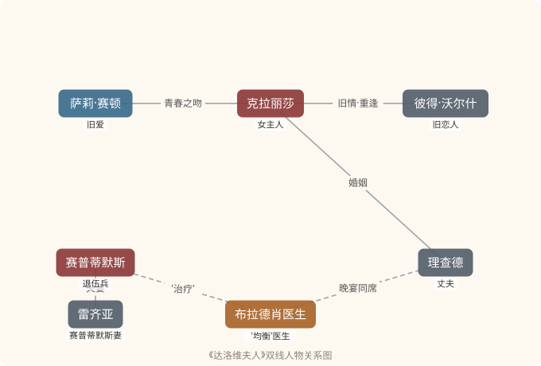

达洛维夫人
一、基本信息
| 作者 | 伍尔夫 |
|---|---|
| 成书/出版 | 1925年出版（Britannica） Virginia Woolf — Encyclopaedia Britannica（百科全书） |
| 国别/地区 | 英国 |
| 时代 | 现当代 · 20世纪 |
| 体裁 | 长篇小说（意识流） |
| 语言 | 英语 |

《达洛维夫人》双线人物关系图（人物关系图）
二、创作背景
结构（Britannica 语境）：'nonlinear approaches to narrative'——1923年6月的伦敦一天：达洛维夫人准备晚宴；一战退伍兵赛普蒂默斯（Shell shock PTSD）同日自杀——'战争创伤'双线（通说）。
书名：原稿题'The Hours'（时时刻刻——通说待核）——Michael Cunningham 1998小说与2002电影沿用。
'生命的一天'：伍尔夫日记自述'在这本书里我有几乎太多的想法——写生与死、理智与疯狂……批判社会体系并表现其内部运作'（日记大意，通说待核）。
三、内容脉络
清晨：达洛维夫人'我要自己去买花'（原文意，待核）——克拉丽莎走进六月伦敦：战后的城市、大本钟、汽车与飞机（通说细节）。
赛普蒂默斯线：退伍兵彼得·沃尔什视角之外——赛普蒂默斯与妻子在公园，'我听到了……'的幻听与'把战争藏起来'的疯狂（通说）；霍姆斯与布拉德肖医生的'强制静养'（通说）。
彼得·沃尔什归来看望：旧情人克拉丽莎——婚姻选择的'假如'（通说）。
晚宴与死亡：晚宴上大人物宾至；布拉德肖带来赛普蒂默斯跳窗死讯——克拉丽莎独自在小房间'感受'他的死亡：'死亡是挑战……那是她感觉的亲近'（原文意，待核）；回到宾客——'她必须回去'（通说）。
四、主要人物表
| 人物 | 身份 | 说明 |
|---|---|---|
| 克拉丽莎·达洛维 | 议员夫人·女主人 | '我更喜欢这儿的一切'式的体面生活与内心'死亡感'（通说） |
| 赛普蒂默斯·史密斯 | 一战退伍兵 | 'shell shock'——克拉丽莎的'黑暗双生'（通说解读） |
| 彼得·沃尔什 | 旧恋人 | 印度归来的批评者（通说） |
| 理查德·达洛维 | 丈夫·议员 | '体面而沉默'的丈夫（通说） |
| 萨莉·赛顿 | 旧爱·青春记忆 | '那是最幸福的夜晚'（原文意，待核）——女性间亲密（通说） |
| 布拉德肖医生 | '均衡'医生 | '比例感'的暴力（通说） |
五、主题与艺术特点
- 时间的双重：钟表时间（大本钟）与心理时间（意识流）——'时时刻刻'（通说）。
- 战争创伤与'理智'：赛普蒂默斯的 PTSD 与'医疗暴力'（通说）。
- 女性与婚姻：克拉丽莎的'选择'与萨莉的'另一种可能'（通说）。
- 艺术特点：意识流切换（无章节标记——通说待核）、'大本钟'切割叙事、象征（花、飞机文字）。
六、影响与评论
- Britannica（Woolf 条）：Mrs. Dalloway (1925) 列于其 major works。
Virginia Woolf — Encyclopaedia Britannica（百科全书） - Michael Cunningham《时时刻刻》（1998）与2002电影（Nicole Kidman奥斯卡）——当代重写（通说待核）。
Virginia Woolf — Encyclopaedia Britannica（百科全书） - 对'创伤书写'与女性主义批评的影响（通说待核）。
Virginia Woolf — Encyclopaedia Britannica（百科全书） - 中译：王家湘译《达洛维夫人》（人民文学出版社，通说待核）。
Virginia Woolf — Encyclopaedia Britannica（百科全书）
七、阅读建议
难点
- 无章节——意识流切换频繁，首读可能迷失：跟随'钟声'。
- 双线（克拉丽莎/赛普蒂默斯）的对照——第二遍阅读才见全貌。
- 一战 PTSD 的历史语境。
- 王家湘译《达洛维夫人》（人民文学出版社，通说待核）：通行本。
- 英文本：Hogarth Press 原版与 Oxford World's Classics（通说待核）。
通读 → 精读开篇与赛普蒂默斯死亡段 → 对照《时时刻刻》与《到灯塔去》。
八、待核实
- 1925年5月14日 Hogarth Press 出版（通说）细节待核。
- 王家湘译本信息待核。
- 《时时刻刻》改编细节待核。
- 开篇句'Mrs. Dalloway said she would buy the flowers herself'逐字核对。